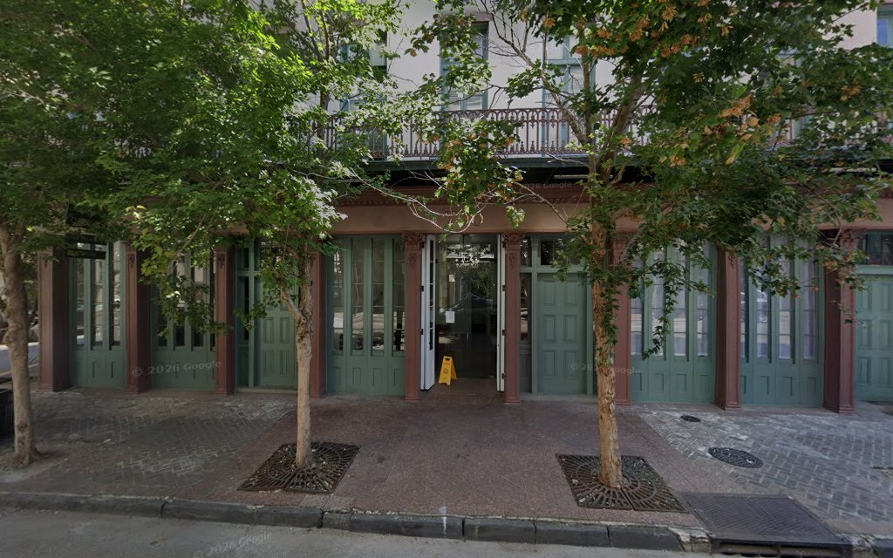

Louisiana
New Orleans
733 Dante St, Ste. HNew Orleans, LA 70118
Mon-Fri 9:00 AM - 5:00 PM


Firm Headquarters • Louisiana
733 Dante St, Ste. H, New Orleans, LA 70118. Our headquarters and the center of our Louisiana practice. Personal injury, medical malpractice, nursing home negligence, and immigration attorneys serving clients throughout the state.

Louisiana Law
Louisiana is the only U.S. state that operates under a civil law system derived from the Napoleonic Code. This makes Louisiana injury law fundamentally different from every other state where we practice.
In Louisiana, what other states call a "statute of limitations" is known as a prescriptive period. For most personal injury claims, the prescriptive period is one year from the date of injury or discovery of the injury. Medical malpractice claims follow separate rules under the Louisiana Medical Malpractice Act, which requires filing with a medical review panel before a lawsuit can proceed.
Louisiana uses a pure comparative fault system. This means an injured person can recover damages even if they are partially at fault for the accident. The recovery is reduced by the plaintiff's percentage of fault. A plaintiff who is 60% at fault can still recover 40% of their damages — unlike Alabama, where any fault by the plaintiff bars recovery entirely.
Nursing home negligence cases in Louisiana are governed by specific statutes that impose duties of care on residential facilities. Louisiana law provides for both compensatory and punitive damages in cases of egregious neglect or abuse of elderly residents.
These distinctions matter. An attorney who does not understand Louisiana's civil law tradition can miss critical deadlines, misapply fault rules, or fail to navigate the medical review panel process. Our New Orleans office has handled Louisiana injury cases since the firm's founding.
New Orleans Practice
Our New Orleans headquarters handles all four of the firm's practice areas.
Catastrophic injury and wrongful death litigation under Louisiana's civil law system. Car accidents, truck accidents, maritime injuries, and premises liability.
Learn moreMedical review panel filings and malpractice litigation under the Louisiana Medical Malpractice Act. Surgical errors, misdiagnosis, and medication mistakes.
Learn moreProtecting Louisiana's elderly from institutional abuse, neglect, and substandard care. Holding facilities and corporate owners accountable.
Learn moreVisas, green cards, deportation defense, asylum, and citizenship. Multilingual representation in English, Spanish, and Portuguese.
Learn moreWhy Our New Orleans Office
Louisiana's legal system is unique in the United States. Our attorneys understand the Civil Code, prescriptive periods, and procedural rules that govern injury claims in this state.
We practice regularly in Orleans Parish, Jefferson Parish, and courts throughout southern Louisiana. We know the local rules, judges, and procedural expectations.
As our headquarters, the New Orleans office coordinates resources across all three locations. Complex multi-state cases are managed from here with support from Mobile and Atlanta.
Consultations are free. You pay nothing unless we win.
504-269-3870